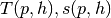
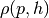
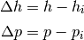
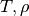
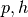
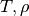
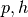

Lookup tables are an effective way of greatly speeding up the computational time when the state variable inputs are variables other than temperature and density (upon which the equations of state are based).
The tables are constructed with enthalpy and pressure as the independent variables. Other inputs are also possible, but the efficiency of the lookup table method is maximized through the use of these independent variables
TTSE was added to CoolProp as of version 3.0. As of version 4.0, bicubic interpolation (see http://en.wikipedia.org/wiki/Bicubic_interpolation) has been added, which greatly improves the accuracy at a small speed penalty (~10%) over TTSE.
The tables can be enabled by calling the function enable_TTSE_LUT() of the CoolPropStateClass (only C++), or alternatively, the enable_TTSE_LUT(FluidName) (Python + anything that calls the DLL) function. This will enable ALL thermodynamic calls for this fluid to use the TTSE method. The function disable_TTSE_LUT is used to disable the TTSE method
Two types of tables are built:
When the single phase tables are constructed, a default range is employed, which is taken to be from the triple point pressure to the twice the critical pressure, and from the saturated liquid enthalpy at the triple point pressure to an enthalpy that is three times the latent heat at the triple point pressure plus the saturated liquid enthalpy at the triple point pressure.
If you do not like that default range, BEFORE you call enable_TTSE_LUT(), call set_TTSESinglePhase_LUT_range(FluidName,hmin,hmax,pmin,pmax)
The single-phase (but not the two-phase) tables are stored in binary form in files for faster loading in the HOME/CoolProp-TTSEData/FluidName folder where HOME is your home folder. If you do not want to save the tables to file, you can call the function disable_TTSE_LUT_writing() to disable the writing of the single phase tables to file BEFORE the tables are built
#import CoolProp module
In [1]: import CoolProp.CoolProp as CP
#This will disable the TTSE method for Propane
In [2]: CP.disable_TTSE_LUT_writing('Propane')
Out[2]: True
#This will enable the TTSE method for Propane
In [3]: CP.enable_TTSE_LUT('Propane')
Out[3]: True
#Check if it is enabled for Propane
In [4]: CP.isenabled_TTSE_LUT('Propane')
Out[4]: True
#Calculate something with the tables for Propane
In [5]: CP.Props('H','P',300,'Q',0,'Propane')
Out[5]: 165.25496936327573
#Check the range for Propane (hmin,hmax,pmin,pmax)
In [6]: CP.get_TTSESinglePhase_LUT_range('Propane')
Out[6]: (-196643.67321201751, 929157.9196160483, 0.0001720461815123372, 8502400.0)
#Calculate something with the tables for Propane (using TTSE method)
In [7]: CP.Props('T','P',300,'H',40,'Propane')
Out[7]: 203.36560953822627
#Set the mode to bicubic interpolation
In [8]: CP.set_TTSE_mode('Propane','BICUBIC') # or could be 'TTSE'
Out[8]: True
#Calculate something with the tables for Propane (using Bicubic method)
In [9]: CP.Props('T','P',300,'H',40,'Propane')
Out[9]: 203.36560971268065
#This will disable the TTSE method for Propane
In [10]: CP.disable_TTSE_LUT('Propane')
Out[10]: True
#Calculate something without the tables for Propane
In [11]: CP.Props('T','P',300,'H',40,'Propane')
Out[11]: 203.36560971332807
Note: most other programming languages that are wrappers around the CoolProp.h header should behave in nearly exactly the same fashion, excepting perhaps the get_TTSESinglePhase_LUT_range function as it uses passing by reference.
Tables are built of , and  as well as the derivatives of each term with respect to p and h. The property of interest is then expanded around the nearest grid point to yield representations like
![T = T_{i,j}+\Delta h\left(\frac{\partial T}{\partial h}\right)_{p}+\Delta p\left(\frac{\partial T}{\partial p}\right)_{h}+\frac{1}{2}\Delta h^2\left(\frac{\partial^2 T}{\partial h^2}\right)_{p}+\frac{1}{2}\Delta p^2\left(\frac{\partial^2T}{\partial p^2}\right)_{h}+\Delta h\Delta p\left(\frac{\partial^2T}{\partial p\partial h}\right)
s = s_{i,j}+\Delta h\left(\frac{\partial s}{\partial h}\right)_{p}+\Delta p\left(\frac{\partial s}{\partial p}\right)_{h}+\frac{1}{2}\Delta h^2\left(\frac{\partial^2 s}{\partial h^2}\right)_{p}+\frac{1}{2}\Delta p^2\left(\frac{\partial^2s}{\partial p^2}\right)_{h}+\Delta h\Delta p\left(\frac{\partial^2s}{\partial p\partial h}\right)
\rho = s_{i,j}+\Delta h\left(\frac{\partial \rho}{\partial h}\right)_{p}+\Delta p\left(\frac{\partial \rho}{\partial p}\right)_{h}+\frac{1}{2}\Delta h^2\left(\frac{\partial^2 \rho}{\partial h^2}\right)_{p}+\frac{1}{2}\Delta p^2\left(\frac{\partial^2\rho}{\partial p^2}\right)_{h}+\Delta h\Delta p\left(\frac{\partial^2\rho}{\partial p\partial h}\right)](_images/math/38a199094c16e0fc27a03f3e93af19ccb534bcaf.png)

See the IAPWS TTSE report for a description of the method. Analytic derivatives are used to build the tables
In the TTSE method, the derivatives are calculated at every grid point. In the bicubic method (see http://en.wikipedia.org/wiki/Bicubic_interpolation) we use the known derivatives at each grid point in order to develop  continuous bicubic functions in each cell. The independent variables () or () are normalized into unit variables that vary between 0 and 1. Then the bicubic coefficients are found for the cell, and the bicubic form is evaluated.
continuous bicubic functions in each cell. The independent variables () or () are normalized into unit variables that vary between 0 and 1. Then the bicubic coefficients are found for the cell, and the bicubic form is evaluated.